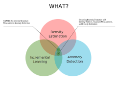
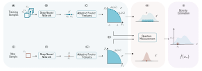
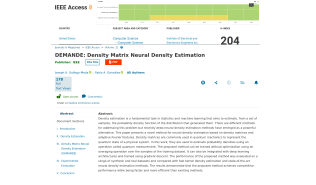
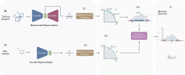
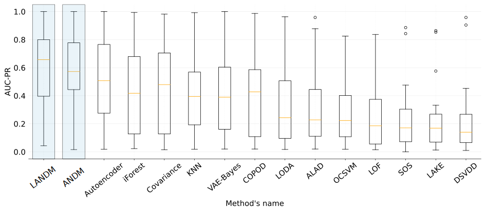
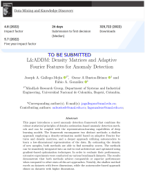
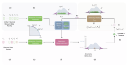
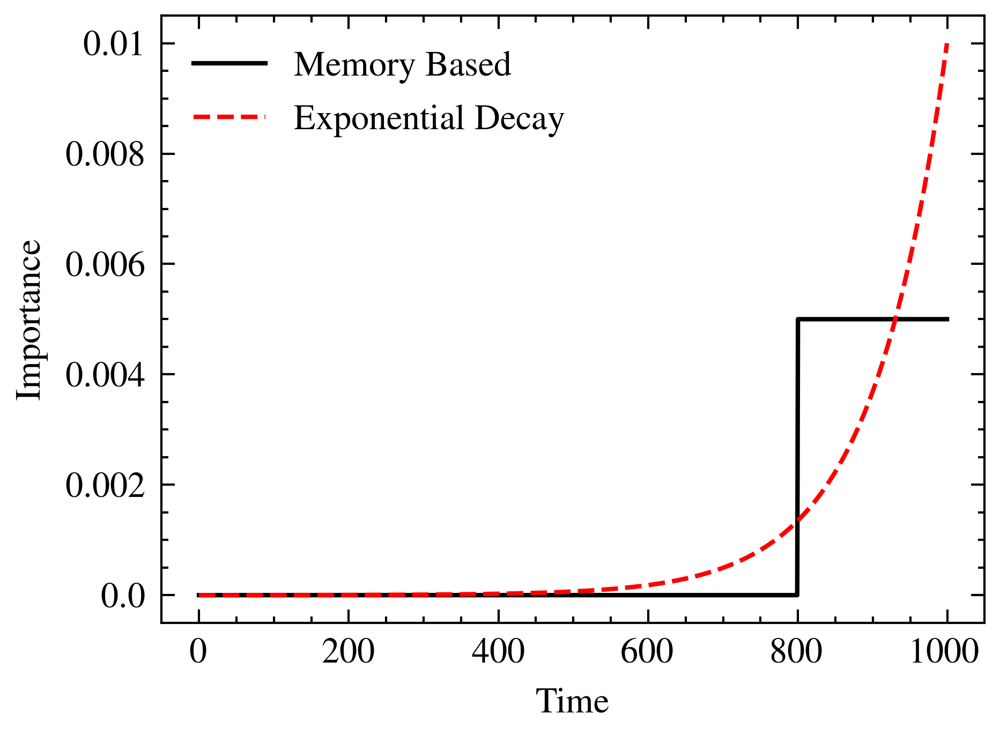
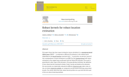

Efficient Non-parametric Neural Density Estimation and Its Application to Outlier and Anomaly Detection
Joseph A. Gallego-Mejia / Fabio González
jagallegom@unal.edu.co / fagonzalezo@unal.edu.coComputing Systems and Industrial Engineering Department – Bogota, Colombia
Background

Density Estimation

- Probability density function (pdf): defines the likelihood of failing within particular ranges of values from a random variable.
- Given a data set, if we suppose that these data are samples of an unknown stochastic process, we try to reconstruct the pdf that best approximates its distribution.
- Two approaches: parametric and non-parametric.
Density Estimation Methods

Problem Statement
Challenges of density estimation methods
- Efficiency and scalability.
- Simplicity.
- Ability to produce a good estimation of the density.
- Integrability with deep models
- Good for anomaly detection?
Problem Statement
| Aspects | Kernel Density Estimation | Neural Density Estimation | Generative Adversarial Networks |
|---|---|---|---|
| Non Memory Based | ✖ | ✓ | ✓ |
| Simplicity and interpretability | ✓ | ✖ | ✖ |
| Training Difficulty | ✓ | ✖ | ✖ |
| Density Estimation | ✓ | ✓ | ✖ |
| Differentiable | ✖ | ✓ | ✓ |
| Good for anomaly detection | ✓? | ✓? | ✓? |
Problem Statement
| Aspects | Kernel Density Estimation | Neural Density Estimation | Generative Adversarial Networks | Ideal Method |
|---|---|---|---|---|
| Non Memory Based | ✖ | ✓ | ✓ | ✓ |
| Simplicity and interpretability | ✓ | ✖ | ✖ | ✓ |
| Training Difficulty | ✓ | ✖ | ✖ | ✓ |
| Density Estimation | ✓ | ✓ | ✖ | ✓ |
| Differentiable | ✖ | ✓ | ✓ | ✓ |
| Good for anomaly detection | ✓? | ✓? | ✓? | ✓? |
DEMANDE Model

Illustration of Density Matrix Neural Density Estimation (DEMANDE) training and prediction flow.
Density Matrix Neural Density Estimation
- An efficient approximate version of KDE.
- Non-memory based.
- Differentiable.
- Two ways of training: optimization free and sgd.
Density Matrix Neural Density Estimation
Based on two main ideas:
- Adaptive Fourier features to approximate the Gaussian kernel.
- Density Matrices to represent the PDF.
Adaptive Fourier Features
Experimental Setup: Datasets
True density of each data set: arc, potential 1 to 4, and 2D mixture. High density points are colored as yellow and low-density points are colored as white.
DEMANDE: Time comparison to fast KDE
DEMANDE: Time comparison to fast KDE

DEMANDE: Comparison to fast KDE
Density estimation

Conclusions
- DEMANDE uses the kernel approximation given by adaptive Fourier features and density estimation
Conclusions
- DEMANDE uses the kernel approximation given by adaptive Fourier features and density estimation
- It is not a memory based algorithm
Conclusions
- DEMANDE uses the kernel approximation given by adaptive Fourier features and density estimation
- It is not a memory based algorithm
- It can be combined with deep learning methods
Conclusions
- DEMANDE uses the kernel approximation given by adaptive Fourier features and density estimation
- It is not a memory based algorithm
- It can be combined with deep learning methods
- It show better time performance than state-of-the-art algorithms over six synthetic density estimation data sets.
Anomaly Detection
Anomaly Detection

- Anomaly is an observation that deviates considerably from some concept of normality.
- Also known as outlier or novelty detection (other terms: unusual, irregular, atypical).
- It can be solved using supervised, unsupervised or semi-supervised approaches
- Some Applications: Medical Anomaly Detection, Fraud Detection, Video Surveillance, Time Series, Industrial Damage Detection
Anomaly Detection
- When the ratio of the anomaly points is high
\(\rightarrow\) supervised learning approach.
Anomaly Detection

- When the ratio of the anomaly points is high
\(\rightarrow\) supervised learning approach. - However, typically it is low \(\rightarrow\) outlier detection algorithms.
Anomaly Detection Methods

Ruff, L., Kauffmann, J. R., Vandermeulen, R. A., Montavon, G., Samek, W., Kloft, M., ... & Müller, K. R. (2021). A unifying review of deep and shallow anomaly detection. Proceedings of the IEEE.
Anomaly detection using density matrices and kernel density estimation (ANDM)

Latent Anomaly Detection using Density Matrices (LANDM)

Experimental Setup - Datasets
\[\tiny{ \begin{array}[c]{l|c|c|c} \hline Dataset & Instances & Dimensions & Outlier Rate \\ \hline Annthyroid & 7200 & 6 & 0,0742 \\ Arrhythmia & 452 & 274 & 0,146 \\ Breastw & 683 & 9 & 0,35 \\ Cardio & 1831 & 21 & 0,096 \\ ForestCover & 286048 & 10 & 0,0096 \\ Glass & 214 & 9 & 0,042 \\ Ionosphere & 351 & 33 & 0,359 \\ Letter & 1600 & 32 & 0,0625 \\ Mammography & 11183 & 6 & 0,02325 \\ MNIST & 7603 & 100 & 0,092 \\ Musk & 3062 & 166 & 0,0317 \\ OptDigits & 5216 & 64 & 0,0288 \\ PenDigits & 6870 & 16 & 0,0227 \\ Pima & 768 & 8 & 0,349 \\ Satellite & 6435 & 36 & 0,3164 \\ SatImage & 5803 & 36 & 0,0122 \\ Shuttle & 49097 & 9 & 0,0715 \\ SpamBase & 3485 & 58 & 0,2 \\ Speech & 3686 & 400 & 0,01655 \\ Thyroid & 3772 & 6 & 0,025 \\ Vertebral & 240 & 6 & 0,125 \\ Vowels & 1456 & 12 & 0,03434 \\ WBC & 378 & 30 & 0,0556 \\ Wine & 129 & 13 & 0,07752 \\ \hline \end{array} } \]Results
Results


Conclusions
- LANDM show better performance than state-of-the-art algorithms over twenty anomaly detection data sets.
Conclusions
- LANDM show better performance than state-of-the-art algorithms over twenty anomaly detection data sets.
- The performance of LANDM does not seem to be affected by the anomaly rate of the data sets or the size of the data sets, but it seems to perform better for low dimensionality data sets.
Conclusions
- LANDM show better performance than state-of-the-art algorithms over twenty anomaly detection data sets.
- The performance of LANDM does not seem to be affected by the anomaly rate of the data sets or the size of the data sets, but it seems to perform better for low dimensionality data sets.
- In contrast with KDE, LANDM does not have huge memory requirements.
Conclusions
- LANDM show better performance than state-of-the-art algorithms over twenty anomaly detection data sets.
- The performance of LANDM does not seem to be affected by the anomaly rate of the data sets or the size of the data sets, but it seems to perform better for low dimensionality data sets.
- In contrast with KDE, LANDM does not have huge memory requirements.
Streaming Anomaly Detection
Problem Statement
Challenges for streaming data analysis and anomaly detection
- The data arrives continuously and in large quantities, so store and process all data samples becomes infeasible.
- Anomalies are few and are scattered in the data stream, making it difficult to find relationships between them.
- Patterns on data can change over time, and the definition of normality can be modified by new data (concept drift). Models need to be constantly updated to take into account the new data patterns.
- The complexity of the analysis algorithms must be very efficient in terms of both memory and time.
Streaming Anomaly Detection Methods
Problem Statement
How KDE can be adapted in such a way that it can perform
efficient anomaly detection on streaming data?
Problem Statement
How KDE can be adapted in such a way that it can perform
efficient anomaly detection on streaming data?
InQMAD: Incremental Quantum Measurement Anomaly Detection
InQMAD: Incremental Quantum Measurement Anomaly Detection
- First Phase: Map the original data to a feature space by using Random Fourier Features
- Second Phase: Initialize the Density Matrix
- Third Phase: Estimate the density of new data points using the Density Matrix, and
use these estimations to classify the points as normal data or anomalies - Fourth Phase: Update the Density Matrix with info from the new points
InQMAD-M: Incremental Memory Quantum Measurement Anomaly Detection

InQMAD-M: Incremental Memory Quantum Measurement Anomaly Detection
- First Phase: Map the original data to a feature space by using Random Fourier Features
- Second Phase: Initialize the Density Matrix
- Third Phase: Estimate the density of new data points using the Density Matrix, and
use these estimations to classify the points as normal data or anomalies - Fourth Phase: Update the Density Matrix with info from the new points
Memory Based vs Exponential Decay

Experimental Setup
- The proposed method and other twelve methods were implemented and tested over twelve streaming datasets.
- We performed a parameter grid search over our method, focusing on the size of the memory, the learning rate of the adaptive Fourier features process, the variance of the approximated Gaussian kernel and the probability of inserting new samples into the memory.
- The selected metric used to compare the performance of all the methods was the area under the ROC curve (AUC-ROC).
Experimental Setup - Datasets
\[\scriptsize{ \begin{array}[c]{l|c|c|c} \hline Dataset & Records & Dimensions \\ \hline Cardio & 1831 & 21 \\ Ionosphere & 351 & 33 \\ Mammography & 11183 & 6 \\ Pima & 768 & 8 \\ Satellite & 6435 & 36 \\ Satimage & 5803 & 36 \\ Synthetic & 10000 & 1 \\ \hline KDD99 & 494021 & 121 \\ NSL & 125973 & 126 \\ Cover & 286048 & 10 \\ DoS & 1048575 & 95\\ UNSW & 2540044 & 122 \\ \hline \end{array} } \]Results
Results

Conclusions
- InQMAD show better performance than state-of-the-art algorithms over twelve anomaly detection data sets.
Conclusions
- InQMAD show better performance than state-of-the-art algorithms over twelve anomaly detection data sets.
- It computes density estimation given a normality measure for each point.
Conclusions
- InQMAD show better performance than state-of-the-art algorithms over twelve anomaly detection data sets.
- It computes density estimation given a normality measure for each point.
- As future work, we will continue to further develop the main concepts behind InQMAD, building algorithms based on the combination of Fourier features and density matrices with deeper neural networks, such as autoencoders.
Other Contributions

Other Contributions
Other Contributions
Fellowship / Research Position
List of contributions (Neural Density Estimation)
- Gallego, J.A., Osorio, J.F., González, F.A. (2022). Fast Kernel Density Estimation with Density Matrices and Random Fourier Features. In: Bicharra Garcia, A.C., Ferro, M., Rodríguez Ribón, J.C. (eds) Advances in Artificial Intelligence – IBERAMIA 2022. IBERAMIA 2022. Lecture Notes in Computer Science, vol 13788. Springer, Cham.
- Gallego, J.A., & González, F.A. (2023). DEMANDE: Density Matrix Neural Density Estimation. IEEE Access (accepted). doi: https://10.1109/ACCESS.2023.3279123}
- González, F. A., Gallego, A., Toledo-Cortés, S., & Vargas-Calderón, V. (2022). Learning with density matrices and random features. Quantum Machine Intelligence, 4(2), 1-17.
- Gallego-Mejia, J. (2023). Efficient Non-Parametric Neural Density Estimation and Its Application to Outlier and Anomaly Detection (Doctoral Consortium). Association for the Advancement of Artificial Intelligence (AAAI 2023)
List of contributions (Anomaly Detection)
- Gallego-Mejia, J., Bustos-Brinez, O., & González, F. A. (2022). LANDM and ANDM: Quantum Inspired Density Matrices for Anomaly Detection. (To Be Submitted on Data Mining and Knowledge Discovery)}
- Gallego-Mejia, J., Bustos-Brinez, O., & González, F. "InQMAD: Incremental Quantum Measurement Anomaly Detection," 2022 IEEE International Conference on Data Mining Workshops (ICDMW), Orlando, FL, USA, 2022, pp. 787-796,}
- Gallego-Mejia, J., Bustos-Brinez, O., & González, F. "Streaming and Incremental Anomaly Detection through Density Matrices" 2023 Springer Neural Computing and Applications (Submitted, Special Issue Invitation on Incremental Learning from ICDM Organization).
- Bustos-Brinez, O., Gallego-Mejia, J., & González, F. A. (2022). Anomaly Detection through Density Matrices and Kernel Density Estimation (AD-DMKDE). Neural Information Processing Systems Conference: LatinX in AI (LXAI) Research Workshop 2022, New Orleans, USA.
List of contributions (Software)
- Gallego-Mejia, J., Bustos-Brinez, O., González, F. A (2023). Joaggi/lean-dmkde:v1.0 (v1.0). Zenodo. https://doi.org/10.5281/zenodo.7709642
- Gallego-Mejia, J., González, F. A (2022). Joaggi/demande: v1.0 (v1.0). Zenodo.https://doi.org/10.5281/zenodo.7709634
- Gallego M., Joseph A., Osorio, Juan F., González, Fabio A. (2022). Fast Kernel Density Estimation with Density Matrices and Random Fourier Features Software (1.0.1). Zenodo. https://doi.org/10.5281/zenodo.6941020
- Bustos-Brinez, O., Gallego-Mejia, J., González, F. A. (2022). Joaggi/anomalydetection-density-matrix-kernel-density-estimation: v1.0.0 (v1.0.0). Zenodo. https://doi.org/10.5281/zenodo.7308904
- Gallego-Mejia, J., Bustos-Brinez, O., González, F. A (2022). Joaggi/Incremental-Anomaly-Detection-using-Quantum-Measurements: v1.0.0 (v1.0.0). Zenodo. https://doi.org/10.5281/zenodo.7183564
- Gallego-Mejia, J., González, F. A (2023). Joaggi/Robust-kernels-for-robust-locationestimation: v1.0 (v1.0). Zenodo. https://doi.org/10.5281/zenodo.7709651
List of contributions (Datasets)
- Gallego-Mejia, Joseph A., Gonzalez, Fabio A. (2023). DEMANDE Dataset (V1.0) [Data set]. Zenodo. https://doi.org/10.5281/zenodo.7822851
List of contributions (Other Contributions)
- Gallego, J. A., González, F. A., & Nasraoui, O. (2021). Robust kernels for robust location estimation. Neurocomputing, 429, 174-186 [54].
- Gallego, J. A., González, F. A., (2019). Robust Estimation in Reproducing Kernel Hilbert Space [Poster Presentation]. Neural Information Processing Systems Conference: LatinX in AI (LXAI) Research Workshop 2019, Vancouver, Canada. https://doi.org/10.52591/lxai2019120829
- Useche, D. H., Bustos-Brinez, O. A., Gallego, J. A., & González, F. A. (2022). Computing expectation values of adaptive Fourier density matrices for quantum anomaly detection in NISQ devices. In arXiv: 2201.10006.
- Gallego-Mejia, J., Bustos-Brinez, O., & González, F. A. (2023). LEAN-DMKDE: Quantum Latent Density Estimation for Anomaly Detection (Student Abstract). Association for the Advancement of Artificial Intelligence (AAAI 2023)
Thank You!
jagallegom@unal.edu.co
Quantum Mechanics
Quantum Mechanics
Brief introduction

Quantum Mechanics
Example

Quantum Mechanics
Brief introduction
- State of a quantum system (QS) \(\psi \in \mathcal{H}\) (vector in a Hilbert space).
- Quantum uncertainty: a QS may be in any superposition of basis states.
- Born rule: probability that a measurement will produce a particular result.
Kernel Density Estimation
Kernel Density Estimation
- Non-parametric density estimation method.
Kernel Density Estimation
- Non-parametric density estimation method.
- Does not make any particular assumption about the underlying probability density function.
Kernel Density Estimation

- Non-parametric density estimation method.
- Does not make any particular assumption about the underlying probability density function.
- Unbiased estimator of the pdf.

Kernel Density Estimation Problems
Kernel Density Estimation Problems
- Inneficient. Memory based algorithm.
Kernel Density Estimation Problems
- Inneficient. Memory based algorithm.
- High dimensional data.
Kernel Density Estimation Problems
- Inneficient. Memory based algorithm.
- High dimensional data.
- It is not differentiable.
Kernel Density Estimation Problems
- Inneficient. Memory based algorithm.
- High dimensional data.
- It is not differentiable.
| Phase | Memory | Time |
|---|---|---|
| Training Phase | \(O(N)\) | \(O(1)\) |
| Testing Phase | \(O(N)\) + \(O(M)\) | \(O(NM)\) |
N: number of training points
M: number of testing points
Kernel Methods
Kernel Methods
- Feature space induced by a kernel function.
Kernel Methods
- Feature space induced by a kernel function.
- High or infinite dimensional embedded feature space.
Kernel Methods
- Feature space induced by a kernel function.
- High or infinite dimensional embedded feature space.
- Problem: efficiency \(O(N^2)\)
\[\textbf{K}= \begin{bmatrix}k(\textbf{x}_1, \textbf{x}_1) & \cdots & k(\textbf{x}_1,
\textbf{x}_N)
\\ & \vdots
\\ \cdots& k(\textbf{x}_i, \textbf{x}_j) & \cdots
\\ & \vdots &
\\ k(\textbf{x}_N, \textbf{x}_1) & \cdots & k(\textbf{x}_N, \textbf{x}_N)
\end{bmatrix}\]
Random Fourier Features
Random Fourier Features
- Idea: feature space approximation.
Random Fourier Features
- Idea: feature space approximation.
- Given \( k:\mathbb{R}^d \times \mathbb R^d \rightarrow \mathbb R\)
builds an embedding \( \phi_{\text{rff}}: \mathbb R^d \rightarrow \mathbb{R}^D\)
such that \[ k(x,y) \approx \langle \phi_{\text{rff}}(x), \phi_{\text{rff}}(y) \rangle \]
Random Fourier Features
- Idea: feature space approximation.
- Given \( k:\mathbb{R}^d \times \mathbb R^d \rightarrow \mathbb R\)
builds an embedding \( \phi_{\text{rff}}: \mathbb R^d \rightarrow \mathbb{R}^D\)
such that \[ k(x,y) \approx \langle \phi_{\text{rff}}(x), \phi_{\text{rff}}(y) \rangle \] - Result: learn models involving non-linear kernels using linear methods
Random Fourier Features

- Idea: feature space approximation.
- Given \( k:\mathbb{R}^d \times \mathbb R^d \rightarrow \mathbb R\)
builds an embedding \( \phi_{\text{rff}}: \mathbb R^d \rightarrow \mathbb{R}^D\)
such that \[ k(x,y) \approx \langle \phi_{\text{rff}}(x), \phi_{\text{rff}}(y) \rangle \] - Result: learn models involving non-linear kernels using linear methods
- AFF: further optimization using neural networks.
Density Matrices
Density Matrices
Are they useful for statistics and ML?

- A more general model of probability.
- It combines linear algebra and probability
- Probability calculations with linear algebra
Density Matrices
Represent a probability function efficiently
- Categorical distributions: Obvious, but innefficient, not very useful.
Density Matrices
Represent a probability function efficiently
- Categorical distributions: Obvious, but innefficient, not very useful.
- Arbitrary distributions on \(\mathbb{R}^n\):
Not obvious, mixtures of non-parametric probability distributions.
Density Matrix Kernel Density Estimation
- An efficient approximate version of KDE.
Density Matrix Kernel Density Estimation
- An efficient approximate version of KDE.
- Non-memory based.
Density Matrix Kernel Density Estimation
- An efficient approximate version of KDE.
- Non-memory based.
- Differentiable.
Iberamia International Conference

Aplications
Generative Models
Density Estimation

Anomaly Detection
Classification
KDE vs DMKDE
KDE and DMKDE
KDE using RFF: Linear strategy
KDE using RFF: Quadratic strategy
KDE using RFF: Quadratic strategy

KDE using RFF
Density Matrix Kernel Density Estimation (DMKDE)

KDE using RFF
Density estimation converges in probability to KDE estimation
Density Matrix Kernel Density Estimation

DMKDE versus KDE
| Phase | KDE | DMKDE |
|---|---|---|
| Training Phase | \(O(1)\) | \(O(ND^2)\) |
| Testing Phase | \(O(NM)\) | \(O(M)\) |
N: number of training points
M: number of testing points.
DEMANDE vs state-of-the-art NDE methods

Liu, Q., Xu, J., Jiang, R., & Wong, W. H. (2021). Density estimation using deep generative neural networks. Proceedings of the National Academy of Sciences, 118(15).
AAAI International Conference
AAAI International Conference
ANDM
Training Stage
- Generate \(\mathbb{w} = (w_1, \cdots, w_D) \) and \(\mathbb{b} = (b_1, \cdots, b_D) \)
- Optimization of \(\mathbb{w} \) and \(\mathbb{b} \) (AFF)
- Embed each training data point step
- Normalization of the embeddings
- Density Matrix building: by adding the outer products of all training embeddings
Validation Stage and Hyperparameter Tuning
- RFF embedding of the validation samples
- Density using an the Born rule
- Compute a threshold \(\theta\) as discriminator
Prediction/Test Stage

- RFF embedding of the test samples
- Density using an the Born rule
- Using the threshold \(\theta\), classify each test sample as normal if its density lies above the threshold, or as anomaly if its density lies below the threshold
Results
\[\tiny{ \begin{array}[c]{l||c|c|c|c|c|c|c|c|c|c|c||c} \hline Dataset & Lean-dmkde & Ad-dmkde & Autoenc. & iForest & Covar. & KNN & VAE-B & COPOD & LODA & ALAD & OCSVM & LOF & SOS & LAKE & DSVDD \\ \hline \hline Annthyroid & \textit{0,248} & 0,187 & 0,232 & \underline{0,34} & \textbf{0,504} & 0,212 & 0,209 & 0,197 & 0,147 & 0,192 & 0,127 & 0,186 & 0,142 & 0,174 & 0,083 \\ Arrhythmia & 0,454 & \underline{0,534} & 0,515 & \textit{0,558} & 0,459 & 0,514 & 0,532 & \textbf{0,566} & 0,365 & 0,393 & 0,425 & 0,433 & 0,472 & 0,116 & 0,32 \\ Breastw & \underline{0,988} & \textit{0,987} & 0,98 & \textbf{0,994} & 0,969 & \underline{0,988} & 0,968 & \textit{0,987} & 0,963 & 0,958 & 0,825 & 0,335 & 0,886 & 0,864 & 0,904 \\ Cardio & 0,47 & \underline{0,627} & \textit{0,604} & \textbf{0,693} & 0,469 & 0,555 & 0,595 & 0,581 & 0,198 & 0,507 & 0,465 & 0,185 & 0,254 & 0,116 & 0,267 \\ ForestCover & \underline{0,465} & \textbf{0,494} & 0,033 & 0,097 & 0,015 & 0,06 & 0,07 & 0,06 & 0,065 & 0,043 & \textit{0,116} & 0,015 & 0 & 0,095 & 0,01 \\ Glass & \textbf{0,643} & \underline{0,167} & 0,077 & 0,072 & 0,097 & 0,121 & 0,077 & 0,076 & 0,058 & 0,056 & 0,035 & 0,035 & 0,072 & 0,036 & \textit{0,143} \\ Ionosphere & 0,797 & \textbf{0,984} & \underline{0,966} & 0,711 & 0,92 & 0,951 & 0,778 & 0,77 & 0,449 & 0,848 & 0,754 & 0,837 & 0,843 & 0,228 & \textit{0,958} \\ Letter & 0,156 & \textbf{0,489} & \textit{0,29} & 0,111 & 0,241 & 0,228 & 0,087 & 0,072 & 0,063 & 0,081 & 0,075 & \underline{0,375} & 0,288 & 0,036 & 0,271 \\ Mammogr. & 0,253 & 0,187 & \underline{0,356} & \textit{0,307} & 0,145 & 0,193 & 0,196 & \textbf{0,416} & 0,154 & 0,19 & 0,042 & 0,113 & 0,072 & 0,072 & 0,078 \\ MNIST & \textbf{0,71} & \textit{0,549} & \underline{0,551} & 0,326 & 0,494 & 0,468 & 0,431 & 0,246 & 0,185 & 0,264 & 0,216 & 0,309 & 0,228 & 0,333 & 0,148 \\ Musk & 0,747 & \textbf{1} & \textbf{1} & 0,891 & \textit{0,982} & \underline{0,992} & \textbf{1} & 0,449 & 0,545 & 0,142 & 0,214 & 0,032 & 0,251 & 0,853 & 0,026 \\ OptDigits & \textit{0,407} & \underline{0,526} & \textbf{0,555} & 0,034 & 0,021 & 0,022 & 0,028 & 0,044 & 0,017 & 0,021 & 0,024 & 0,032 & 0,032 & 0,021 & 0,026 \\ PenDigits & \textbf{0,672} & \underline{0,614} & 0,173 & \textit{0,339} & 0,092 & 0,208 & 0,208 & 0,162 & 0,289 & 0,121 & 0,118 & 0,018 & 0,063 & 0,06 & 0,048 \\ Pima & \underline{0,572} & \textbf{0,596} & 0,487 & 0,463 & 0,49 & \textit{0,497} & 0,45 & 0,479 & 0,339 & 0,424 & 0,393 & 0,463 & 0,415 & 0,319 & 0,453 \\ Satellite & \underline{0,809} & \textbf{0,882} & \textit{0,795} & 0,66 & 0,76 & 0,61 & 0,631 & 0,601 & 0,596 & 0,561 & 0,54 & 0,36 & 0,354 & 0,23 & 0,32 \\ SatImage & 0,918 & 0,764 & \underline{0,948} & 0,912 & 0,635 & \textbf{0,955} & 0,822 & 0,751 & \textit{0,923} & 0,575 & 0,394 & 0,06 & 0,056 & 0,175 & 0,014 \\ Shuttle & \textbf{0,986} & 0,957 & \textit{0,96} & \underline{0,968} & 0,842 & 0,19 & 0,922 & 0,954 & 0,911 & 0,878 & 0,568 & 0,1 & 0,111 & 0,163 & 0,072 \\ SpamBase & \textbf{0,966} & \underline{0,818} & 0,487 & 0,372 & 0,307 & 0,345 & 0,348 & 0,44 & 0,302 & 0,264 & 0,273 & 0,155 & 0,26 & \textit{0,576} & 0,231 \\ Speech & \underline{0,043} & 0,016 & 0,019 & 0,023 & 0,022 & 0,019 & 0,02 & 0,02 & 0,029 & 0,02 & 0,019 & \textbf{0,044} & 0,024 & 0,026 & \textit{0,028} \\ Thyroid & 0,364 & 0,374 & \textit{0,499} & \underline{0,675} & \textbf{0,688} & 0,324 & 0,442 & 0,223 & 0,131 & 0,402 & 0,286 & 0,293 & 0,082 & 0,013 & 0,125 \\ Vertebral & \textbf{0,787} & \underline{0,26} & 0,197 & 0,133 & 0,138 & 0,125 & 0,165 & 0,119 & 0,106 & 0,123 & \textit{0,218} & 0,153 & 0,121 & 0,164 & 0,077 \\ Vowels & 0,276 & \textbf{0,757} & \textit{0,574} & 0,074 & 0,05 & \underline{0,641} & 0,148 & 0,049 & 0,05 & 0,075 & 0,083 & 0,374 & 0,199 & 0,267 & 0,217 \\ WBC & \underline{0,758} & \textit{0,703} & 0,489 & 0,587 & 0,597 & 0,484 & 0,506 & 0,7 & 0,626 & 0,161 & 0,229 & \textbf{0,76} & 0,476 & 0,237 & 0,192 \\ Wine & \textbf{1} & 0,467 & \underline{0,756} & 0,61 & \underline{0,756} & 0,444 & 0,297 & 0,533 & 0,494 & 0,421 & 0,242 & \textit{0,639} & 0,091 & 0,274 & 0,137 \\ \hline \hline Mean & \textbf{0,6036}& \underline{0,5807}& \textit{0,5226} & 0,4562 & 0,4455 & 0,4227 & 0,4137 & 0,3956 & 0,3335 & 0,3216 & 0,2783 & 0,2627 & 0,2413 & 0,227 & 0,2145 \\ \end{array}} \]Streaming Anomaly Detection
First Phase: Data Mapping
- Idea: feature space approximation.
First Phase: Data Mapping
- Idea: feature space approximation.
- Given a kernel \( k:\mathbb{R}^d \times \mathbb R^d \rightarrow \mathbb R\)
the method builds an embedding \( \phi_{\text{rff}}: \mathbb R^d \rightarrow \mathbb{R}^D\)
such that \[ k(x,y) \approx \langle \phi_{\text{rff}}(x), \phi_{\text{rff}}(y) \rangle \]
First Phase: Data Mapping
- Idea: feature space approximation.
- Given a kernel \( k:\mathbb{R}^d \times \mathbb R^d \rightarrow \mathbb R\) the method builds an embedding \( \phi_{\text{rff}}: \mathbb R^d \rightarrow \mathbb{R}^D\) such that \[ k(x,y) \approx \langle \phi_{\text{rff}}(x), \phi_{\text{rff}}(y) \rangle \]
- The embedding \( \phi_{\text{rff}} \) depends on two parameters, \(\textbf{w}\) and \(\it{b}\), that are built by sampling on random distributions.
First Phase: Data Mapping
- Idea: feature space approximation.
- Given a kernel \( k:\mathbb{R}^d \times \mathbb R^d \rightarrow \mathbb R\) the method builds an embedding \( \phi_{\text{rff}}: \mathbb R^d \rightarrow \mathbb{R}^D\) such that \[ k(x,y) \approx \langle \phi_{\text{rff}}(x), \phi_{\text{rff}}(y) \rangle \]
- The embedding \( \phi_{\text{rff}} \) depends on two parameters, \(\textbf{w}\) and \(\it{b}\), that are built by sampling on random distributions.
- We applied AFF (Adaptive Fourier Features), a process to further optimize \(\textbf{w}\) and \(\it{b}\) using neural networks.
Second Phase: Density Matrix Initialization
- The density matrix that stores the probability model is calculated as: \[\begin{equation} \rho_t = \frac{1}{n}\sum_{i=1}^N q_i \cdot \phi_\text{aff}(\textbf{x}_i)\phi^t_\text{aff}(\textbf{x}_i) \end{equation} \]
Second Phase: Density Matrix Initialization
- The density matrix that stores the probability model is calculated as: \[\begin{equation} \rho_t = \frac{1}{n}\sum_{i=1}^N q_i \cdot \phi_\text{aff}(\textbf{x}_i)\phi^t_\text{aff}(\textbf{x}_i) \end{equation} \]
- An initial portion of the stream $\{\bf{x}_1, \cdots, \bf{x}_n\}$ is used to update the density matrix.
Second Phase: Density Matrix Initialization
- The density matrix that stores the probability model is calculated as: \[\begin{equation} \rho_t = \frac{1}{n}\sum_{i=1}^N q_i \cdot \phi_\text{aff}(\textbf{x}_i)\phi^t_\text{aff}(\textbf{x}_i) \end{equation} \]
- An initial portion of the stream $\{\bf{x}_1, \cdots, \bf{x}_n\}$ is used to update the density matrix.
- In quantum mechanics, density matrices are a mechanism used to efficiently represent states of quantum systems (vectors in a Hilbert space). Density matrices combine linear algebra and probability, allowing to perform probability calculations by using linear algebra operations.
Second Phase: Density Matrix Initialization
- The density matrix that stores the probability model is calculated as: \[\begin{equation} \rho_t = \frac{1}{n}\sum_{i=1}^N q_i \cdot \phi_\text{aff}(\textbf{x}_i)\phi^t_\text{aff}(\textbf{x}_i) \end{equation} \]
- An initial portion of the stream $\{\bf{x}_1, \cdots, \bf{x}_n\}$ is used to update the density matrix.
- In quantum mechanics, density matrices are a mechanism used to efficiently represent states of quantum systems (vectors in a Hilbert space). Density matrices combine linear algebra and probability, allowing to perform probability calculations by using linear algebra operations.
- Only normal data points are used in this phase.
Third Phase: Density Estimation and Anomaly Detection
- Given a new data point \(\textbf{x}_{t+1}\), its density is estimated using the following equation: \[\begin{equation} \hat{f}(\textbf{x}_{t+1}) = \frac{1}{M_\sigma} {\phi}_\text{aff}(\textbf{x}_{t+1})^T \rho_t \: {\phi}_\text{aff}(\textbf{x}_{t+1}) \end{equation} \]
Third Phase: Density Estimation and Anomaly Detection
- Given a new data point \(\textbf{x}_{t+1}\), its density is estimated using the following equation: \[\begin{equation} \hat{f}(\textbf{x}_{t+1}) = \frac{1}{M_\sigma} {\phi}_\text{aff}(\textbf{x}_{t+1})^T \rho_t \: {\phi}_\text{aff}(\textbf{x}_{t+1}) \end{equation} \]
- The threshold $\tau$ that separates normal and anomalous points is found using two different approaches.
- Prior knowledge of the proportion of anomalies ($\beta$).
- Use an optimization metric computed over $\{\hat{f}(\textbf{x}_1), \cdots, \hat{f}(\textbf{x}_n)\}$, for instance using the best threshold with respect to AUC-ROC in initial memory.
Third Phase: Density Estimation and Anomaly Detection
- Given a new data point \(\textbf{x}_{t+1}\), its density is estimated using the following equation: \[\begin{equation} \hat{f}(\textbf{x}_{t+1}) = \frac{1}{M_\sigma} {\phi}_\text{aff}(\textbf{x}_{t+1})^T \rho_t \: {\phi}_\text{aff}(\textbf{x}_{t+1}) \end{equation} \]
- The threshold $\tau$ that separates normal and anomalous points is found using two different approaches.
- Prior knowledge of the proportion of anomalies ($\beta$).
- Use an optimization metric computed over $\{\hat{f}(\textbf{x}_1), \cdots, \hat{f}(\textbf{x}_n)\}$, for instance using the best threshold with respect to AUC-ROC in initial memory.
- The classification of the data point \(\textbf{x}_{t+1}\) will be given by: \[\begin{equation} \hat{y}(\textbf{x}_{i}) = \left\{\begin{matrix} \text{`normal`} & \textit{if } \: \hat{f}(\textbf{x}_{i}) \geq \tau\\ \text{`anomaly`} & \textit{otherwise} \end{matrix}\right. \end{equation} \]
Fourth Phase: Density Matrix Update
- The density matrix can be updated when a new data point arrives. The sample \({\textbf{x}_{t+1}}\) is added to
the density matrix, weighing it with a tradeoff parameter \(\alpha\).
Fourth Phase: Density Matrix Update
- The density matrix can be updated when a new data point arrives. The sample \({\textbf{x}_{t+1}}\) is added to
the density matrix, weighing it with a tradeoff parameter \(\alpha\). - The updated density matrix will be \[\begin{equation} \rho_{t+1} = (1-\alpha) \cdot \rho_{t} + \alpha \cdot \phi_\text{aff}({\textbf{x}_{t+1}})\phi^T_\text{aff}({\textbf{x}_{t+1}}) \end{equation} \]
Fourth Phase: Density Matrix Update
- The density matrix can be updated when a new data point arrives. The sample \({\textbf{x}_{t+1}}\) is added to
the density matrix, weighing it with a tradeoff parameter \(\alpha\). - The updated density matrix will be \[\begin{equation} \rho_{t+1} = (1-\alpha) \cdot \rho_{t} + \alpha \cdot \phi_\text{aff}({\textbf{x}_{t+1}})\phi^T_\text{aff}({\textbf{x}_{t+1}}) \end{equation} \]
- The updated density matrix is then used to estimate the density of the next sample in the data stream.
Statistical Analysis of Experimental Setup
Friedman-Nemenyi Test
- Black squares correspond to pairs of algorithms that differ significantly between them.